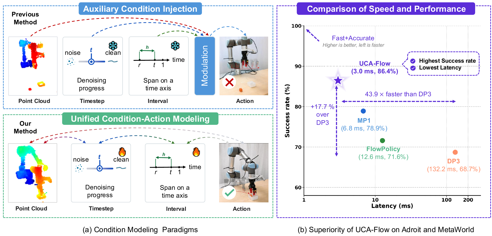
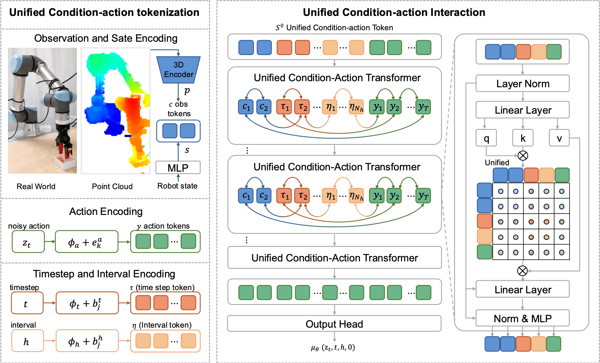
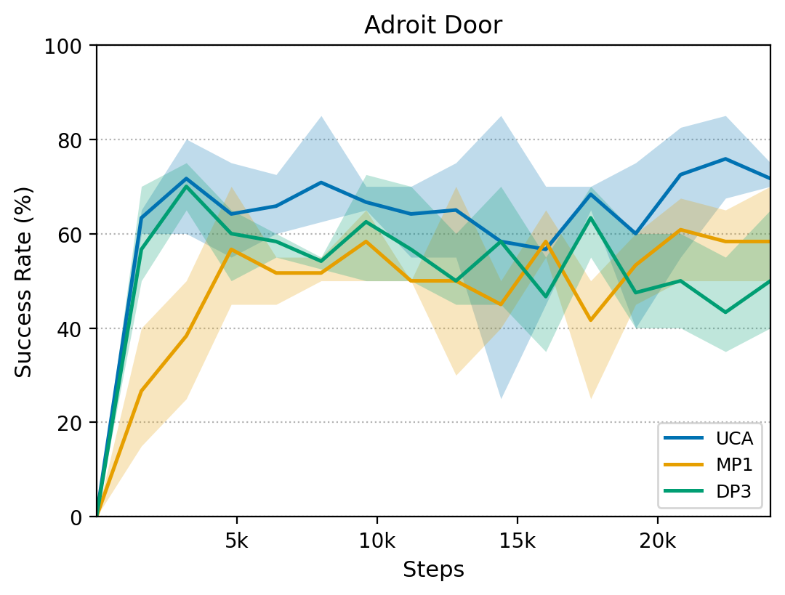
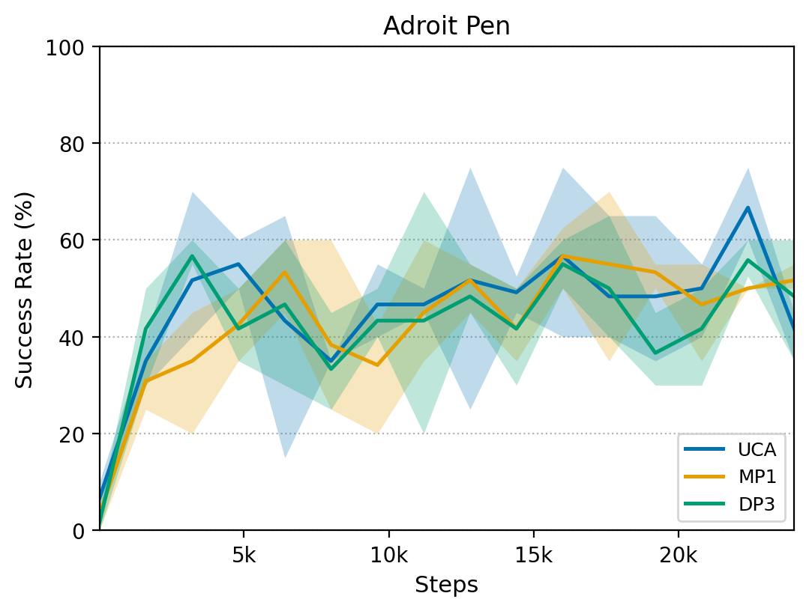
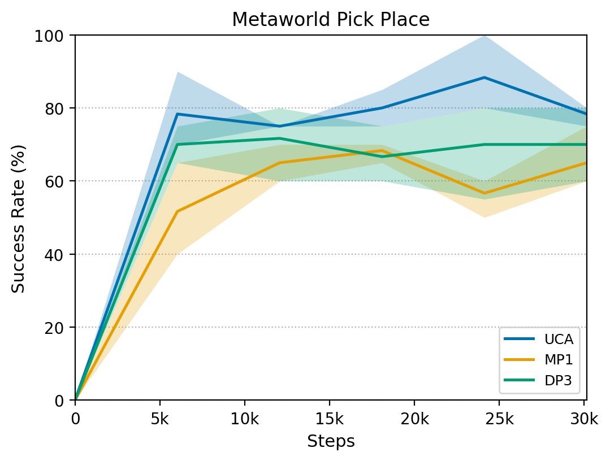
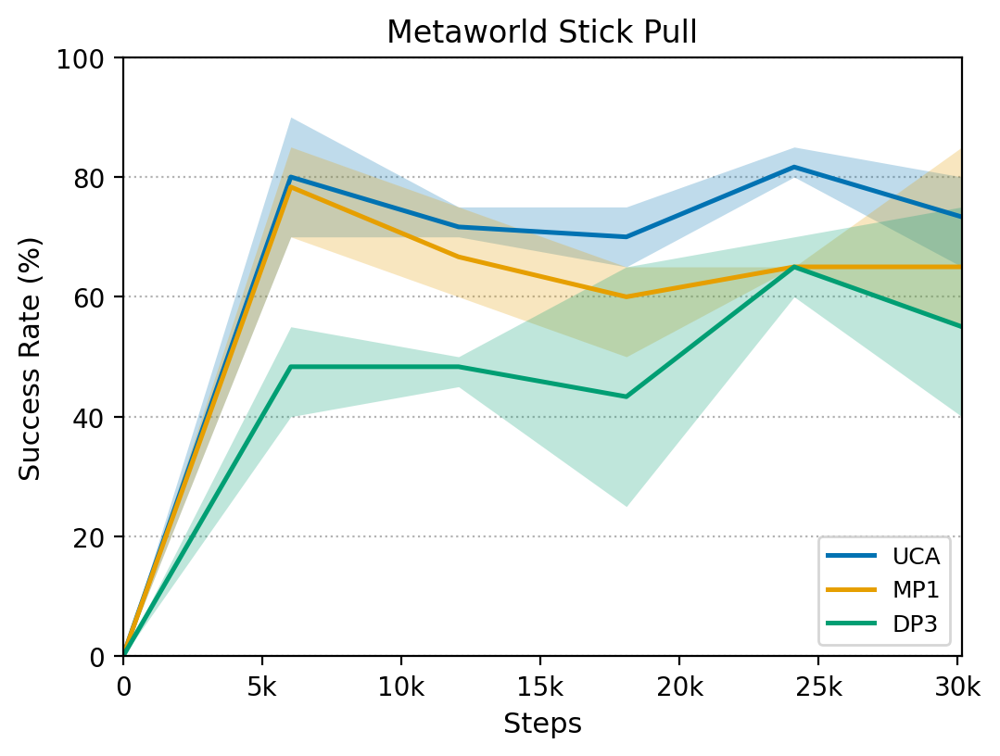

Abstract
Robot manipulation requires policies that are both accurate and efficient, as robot control must respond to changing observations under tight latency constraints. Recent diffusion and flow policies are promising, but they often treat conditions as auxiliary signals rather than jointly evolving them with action trajectories. We find that this limitation can be effectively mitigated by a simple yet effective unified condition-action modeling design that represents conditions and actions in a shared token space, allowing a compact model to achieve high performance while improving both inference speed and accuracy. Therefore, we propose UCA-Flow, a unified condition-action modeling framework for accurate one-step action generation. Our method unifies observation conditions, timestep conditions, interval conditions, and action tokens into a single sequence, and processes them with a Unified Condition-Action Transformer for joint condition-action representation learning. As a result, condition representations are dynamically reconstructed according to the current generation stage, highlighting information most relevant for action refinement. Furthermore, we introduce an improved dual-pass supervision scheme over \( u \) and \( v \) for stronger optimization of unified condition-action modeling. UCA-Flow improves the average success rate by 9.3 percentage points over the strongest baseline, while achieving 45.6× and 33.4× speed ups over DP3 and Simple DP3, and remaining 4.3× and 2.3× times faster than one-step FlowPolicy and MP1, respectively.
1. Motivation: Unified Condition-Action Modeling
In this paper, we propose UCA-Flow, a unified condition-action modeling framework for accurate one-step action generation.
- (a) Existing policies often treat condition as auxiliary condition signals. Unified condition-action modeling enables conditions and actions to evolve together, allowing condition representations to adapt to the current generation stage and action.
- (b) UCA-Flow achieves a superior efficiency-performance trade-off, delivering the highest success rate with the lowest latency on Adroit and MetaWorld.

2. Method Overview: Unified Condition-Action Transformer
UCA-Flow takes an observation history \(o\), a noisy action \(z_t\), a timestep \(t\), and an interval \(h\) as inputs, and predicts an interval-aware average velocity \(u_\theta(z_t, t, h, o)\) for one-step action generation. It unifies observation, timestep, interval, and action into a single token sequence, processed by a Unified Condition-Action Transformer to jointly update condition and action representations.
- Unified Tokenization: observation, timestep, interval, and noisy action are projected into a shared token space as \(S_0 = [c_1, c_2, \tau_1, \ldots, \tau_{N_t}, \eta_1, \ldots, \eta_{N_h}, y_1, \ldots, y_T]\).
- Unified Interaction: condition and action tokens are jointly refined within the same Transformer sequence, turning conditioning from external injection into internal representation evolution.
- Dual-Pass Supervision: two forward passes supervise the average velocity \(u\) and instantaneous velocity \(v\) toward the same target, stabilizing training while keeping one-step inference (\(\hat{x} = z_1 - u_\theta(z_1, 1, 1, o)\)).

3. Simulation Results: Superior Performance and Efficiency
We rigorously evaluated UCA-Flow across 37 tasks spanning the Adroit and Meta-World benchmarks. The results demonstrate that unifying condition and action modeling fundamentally optimizes the inference mechanics, yielding significant improvements in both accuracy and computational efficiency.
- Highest Success Rate: Achieves an average success rate of 88.2%, outperforming multi-step diffusion baselines like DP3.
- Ultra-Low Latency: Requiring only a single function evaluation (NFE=1), the inference time is reduced to just 2.9 ms, ideal for high-frequency real-time control.
Success Rate Comparison
Evaluated on 37 Adroit and Meta-World tasks. Best results are highlighted in bold.
| Methods | Publication | NFE | Adroit | MetaWorld | Average | |||||
|---|---|---|---|---|---|---|---|---|---|---|
| Hammer | Door | Pen | Easy (21) | Medium (4) | Hard (4) | Very Hard (5) | ||||
| DP3 | RSS'24 | 10 | 100 ± 0 | 56 ± 5 | 46 ± 10 | 87.3 ± 2.2 | 44.5 ± 8.7 | 32.7 ± 7.7 | 39.4 ± 9.0 | 68.7 ± 4.7 |
| Simple DP3 | RSS'24 | 10 | 98 ± 2 | 40 ± 17 | 36 ± 4 | 86.8 ± 2.3 | 42.0 ± 6.5 | 38.7 ± 7.5 | 35.0 ± 11.6 | 67.4 ± 5.0 |
| FlowPolicy | AAAI'25 | 1 | 98 ± 1 | 61 ± 2 | 54 ± 4 | 84.8 ± 2.2 | 58.2 ± 7.9 | 40.2 ± 4.5 | 52.2 ± 5.0 | 71.6 ± 3.5 |
| MP1 | AAAI'26 | 1 | 100 ± 0 | 69 ± 2 | 58 ± 5 | 88.2 ± 1.1 | 68.0 ± 3.1 | 58.1 ± 5.0 | 67.2 ± 2.7 | 78.9 ± 2.1 |
| UCA-Flow (Ours) | Ours | 1 | 100 ± 0 | 77.3 ± 2.0 | 63.0 ± 3.4 | 92.4 ± 1.2 | 79.3 ± 3.4 | 68.0 ± 2.0 | 85.3 ± 2.0 | 88.2 ± 1.7 |
Inference Time Comparison (ms)
Reported inference latency in milliseconds with standard deviation.
| Methods | Publication | NFE | Adroit /ms | MetaWorld /ms | Average /ms | |||||
|---|---|---|---|---|---|---|---|---|---|---|
| Hammer | Door | Pen | Easy (21) | Medium (4) | Hard (4) | Very Hard (5) | ||||
| DP3 | RSS'24 | 10 | 129.5 ± 13.9 | 141.3 ± 14.8 | 145.1 ± 12.3 | 129.3 ± 10.7 | 134.7 ± 11.5 | 131.9 ± 12.4 | 138.4 ± 10.8 | 132.2 ± 11.2 |
| Simple DP3 | RSS'24 | 10 | 103.1 ± 11.4 | 111.3 ± 10.2 | 128.2 ± 13.1 | 91.9 ± 8.6 | 98.3 ± 9.1 | 101.3 ± 9.7 | 103.8 ± 10.2 | 97.0 ± 9.2 |
| FlowPolicy | AAAI'25 | 1 | 15.3 ± 1.1 | 13.2 ± 4.0 | 12.0 ± 2.8 | 12.0 ± 1.4 | 12.2 ± 1.5 | 13.5 ± 1.4 | 14.5 ± 1.6 | 12.6 ± 1.5 |
| MP1 | AAAI'26 | 1 | 7.1 ± 0.2 | 7.2 ± 0.1 | 7.4 ± 0.3 | 6.7 ± 0.0 | 6.7 ± 0.1 | 6.7 ± 0.1 | 6.8 ± 0.1 | 6.8 ± 0.1 |
| UCA-Flow (Ours) | Ours | 1 | 2.9 ± 0.2 | 2.9 ± 0.1 | 3.0 ± 0.3 | 3.1 ± 0.1 | 2.9 ± 0.1 | 3.0 ± 0.1 | 2.8 ± 0.1 | 2.9 ± 0.1 |
Learning Curves
Success rate / score over training steps on representative Adroit and Meta-World tasks.




4. Real-World Evaluation: Algorithm Comparison
We compared the inference performance of different algorithms on a real robotic arm platform. UCA-Flow maintained a high success rate while demonstrating extremely low inference latency and smoother motion transitions.
Task 1: Pick and Place
UCA-Flow (Ours)
Baseline 1: MP1
Baseline 2: DP3
Task 2: Close Drawer
UCA-Flow (Ours)
Baseline 1: MP1
Baseline 2: DP3
5. Real-World Evaluation: Attention Visualization
Gradient-based saliency visualization on real-world tasks. UCA-Flow highlights more task-relevant regions, including the end-effector, target object, and upper arm joints, compared with the auxiliary condition-injection AdaLN and Cross-Attention.
Task 1: Item Pick-up Stage Attention Changes
UCA-Flow
Method A: Adaln
Method B: Cross-Attention
Task 2: Close Drawer Stage Attention Changes
UCA-Flow
Method A: Adaln
Method B: Cross-Attention
BibTeX
@misc{zhou2026unifiedconditionactionmodelingaccurate,
title={Unified Condition-Action Modeling for Accurate One-Step Action Generation},
author={Xinyu Zhou and Zikun Cai and Kuangji Zuo and Gen Li and Boyu Ma and Yanshuo Lu and Yutong Song and Mingqi Yuan and Jiayu Chen and Jianfei Yang},
year={2026},
eprint={2608.16153},
archivePrefix={arXiv},
primaryClass={cs.RO},
url={https://arxiv.org/abs/2608.16153},
}